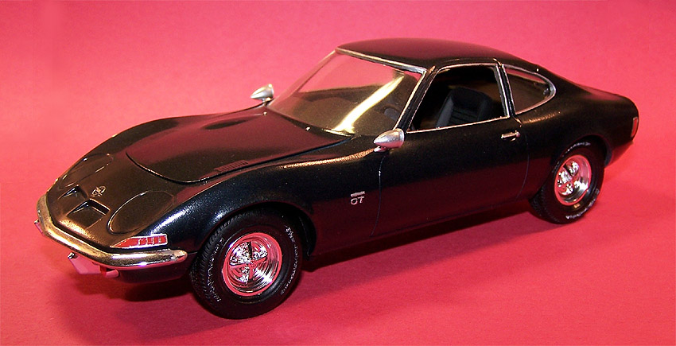
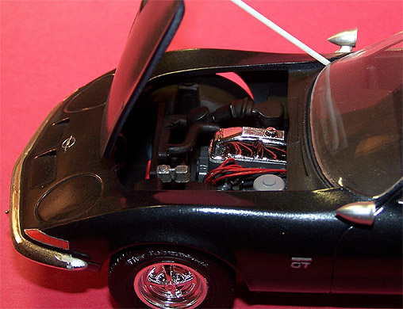
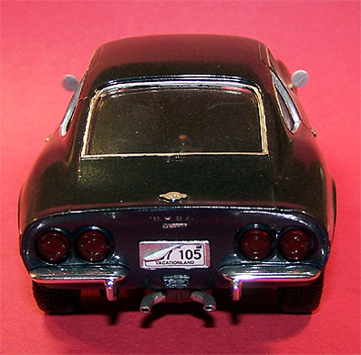
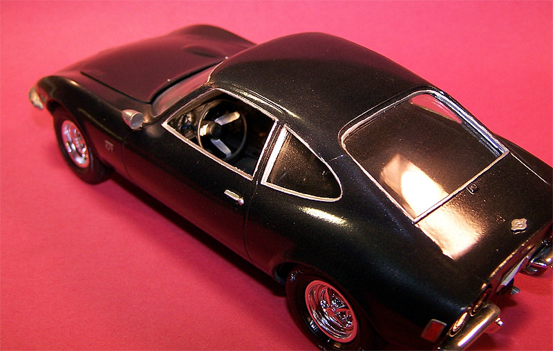

AMT 1/25 1970 Buick Opel GT

Kit #31226 Collector’s Market Value $21.09
Images and text Copyright © 2005 by Matt Swan
Developmental Background
Back in the day we called this car the “Baby Vette” due to its resemblance to the Corvette. The car was built by General Motor’s German division, Opel – yes the same guys that built the various Opel vehicles during World War two. While the car had some really slick exterior styling under the hood was generally found a 1900cc in-line four-cylinder engine. The engine and drive train was the same as found in the Opel Manta and the Chevy Vega - parts were generally interchangeable but they were definitely different cars when you were driving them. Some models featured a dual carburetor and a few even had six cylinder engines packed under the hood but that may have been an aftermarket conversion done by backyard mechanics. One of the more unusual features of the car mechanically speaking was the single transverse leaf spring in the front suspension. Inside the cabin this car was equal to any requirements James Bond would have had. Speaking of secret agents, this car even had a cameo appearance on the television series “Get Smart” and was the ride for that intrepid agent. There was a bank of toggle switches that gave the driver options to shut down taillights and/or running lights; there was a lever on the consol that manually operated the hidden headlights. When I would open the lights on mine my girlfriend (later she became my wife) always thought the car was rolling its eyes at her.
Yes, I had the pleasure of driving one of these little beauties for several years. The car was quick and nimble and provided ample legroom for my six foot plus frame. One morning while driving to work I was racing down a twisting country road when I encountered a pack of swine recently escaped from a local farm – yes, I’m talking bacon on the hoof here. There were six of them and I dodged valiantly but one little pig was never going home that day. I was also in the market for a new turn signal lamp as well. The final days of the car came when once again, driving faster than was prudent (the car seemed to bring this out in me) I rammed it broadside into a semi truck loaded with cornflakes pulling out of the Kellogg Plant in Battle Creek Michigan. The car did it’s job and I walked away a little wiser to buy a sedan and put that lead foot monster to sleep.
The Kit
Quite often we build models to capture some lost moment of our youth and this one is just that. A melancholy moment when I wished I still owned that sports car. It’s been a few years since I built this and the memory of the parts breakdown has long since faded. What I can remember is that most of the parts fit together well, no putty or filler was needed. I hate the chrome pieces that come with car kits, you always get that spot where it was removed from the tree and it’s nearly impossible to repair it – I slat a little silver paint on it and hope no one notices.
 
It was not until I was writing this and adding the pictures that I noticed my decal on the rear plate was curling – sorry about that. Ironically the plate reads “Vacationland” which is what the geographic area I now live in is called. How weird is that? I detailed the dash with a fine paintbrush and added ignition wires to the engine, otherwise she is built right from the box. The exterior paint job was done to match the car I drove in my younger days. As far as accuracy of the model – it sure looks like my car as I remember it other than mine had wire rims and the big imprint of a semi truck in the hood last time I saw it.

Conclusions
It was a fun little kit to build and a nice break from my regular modeling. This particular build is certainly not a prizewinner. I recall that a friend of mine ran one of these in the upper peninsula of Michigan as a stock car racer – he had a ladder frame installed underneath and a 308 cid V-8 stuffed under the hood. Considering the overall weight of the car combined with the power of that engine the fact that he had wheelie extension in back was completely necessary. That would be a cool conversion to build – oh yeah!